Nancy’s Guide to Dungeon Topology
Table of Contents
- What da heckie is dungeon topology?
- What da heckie is a dungeon?
- Dungeon states
- What da heckie is state?
- What da heckie a state variable?
- What da heckie is a side effect?
- What da heckie is a configuration?
- What da heckie is a state space?
- What da heckie is a state space diagram?
- What da heckie does a state space diagram haf ta do wif state variables?
- State space semantics and notation
- What da heckie are configuration classes?
- Dungeon topology
- TODO Analysis: Temple of Time (Twilight Princess)
- TODO Analysis of game mechanics
- TODO Dungeon generation (updated: )
- TODO Information theory analysis
an assimilation of Dungeon Topology Notes !!
big wip!
What da heckie is dungeon topology?
It’s a way of analysing Zelda-style dungeons! :0
(It’s using state space diagrams of some sort to map out the progression of Zelda-style dungeons!)
The ultimate goal I have in mind for this dungeon topology stuff is to create a formula for either randomly generating dungeons or to use as a guide for designing your own dungeons of arbitrary complexity!
What da heckie is a dungeon?
I’m not sure! XD I think it’s where you throw prisoners to rot or something. Just kidding! It’s actually like the dungeons in Zelda! Where there are enemies and puzzles and you have to navigate through all the dungeon puzzles to the boss! (Or something like that! 0_0)
More specifically, what gives a dungeon its identity? I claim it’s the following three things:
- the set of all possible dungeon configurations a dungeon can have at any given time
- the set of all possible meaningful actions the player can take in any one dungeon configuration that causes the dungeon to end up in a different configuration
- the dungeon’s topological template: the set of all possible paths the player can take from any one location in the dungeon to any other location in the dungeon as a function of the dungeon’s current state.
We’ll talk about all three of these things!
Dungeon states
What da heckie is state?
The first thing to note about a dungeon is that it has state. That means at any given time the configuration of the dungeon might be one thing or it might be another.
For example, a particular door might be locked or unlocked, a particular switch might be pressed or unpressed, a certain chest might have yet to be opened, or it might have already been opened, a particular enemy might have been defeated, or it might still be lurking.
Often the physical structure of the dungeon is dynamic too. Some passageways may or may not be accessible at any given time!
All of these particularities of the configuration of the dungeon at any point in time is called the dungeon’s current state.
What da heckie a state variable?
The state is controlled by a collection of variables called state variables. These are variables whose value can change over the course of progressing through the dungeon. The values of these variables determine or represent certain aspects of the current configuration of the dungeon.
For example, there could be a variable called defeated_miniboss which has the value of false until you have defeated the miniboss, after which it has the value of true! Further, maybe this variable also corresponds to whether a certain chest has appeared yet (such as chest that appears after the miniboss has been defeated).
A value of true or false is called a boolean value, and a variable that has a value of either true or false is called a boolean variable.
What da heckie is a side effect?
State variables generally change in response to meaningful actions of the player! An action that causes a change in a state variable is said to have a side effect. A side effect is a change in dungeon state that occurs as an external consequence to some action.
For example, if the player presses a switch, and suddenly a water wheel kicks into action, the action is the pressing of the switch, and the side effect is the activation of the water wheel.
More specifically, the action of pressing the switch has the side effect of changing a state variable, maybe one called water_wheel_activated!
What da heckie is a configuration?
At any given time, the dungeon’s state variables might have any number of possible combinations of values. The current combination of values makes up the current configuration of the dungeon.
For example, the player may have unlocked the door, but not activated the water wheel. Or the player may have unlocked the door and activated the water wheel. These are two distinct configurations of the dungeon.
In additon, the set of all possible actions that the player can take at any given time is dependant on the configuration at that time.
For example, suppose the switch to activate the water wheel is behind the locked door, and suppose the player hasn’t yet unlocked the door. In this configuration, the player doesn’t have the luxury to activate the water wheel just yet, but they may be able to unlock the door if they have a key! Now suppose the door has been unlocked. In this configuration, the player is able to activate the water wheel, an action that wasn’t available to them in the other configuration!
What da heckie is a state space?
The state space of the dungeon is like a map of all possible configurations. All the points in this space are unique configurations of the dungeon. Each point also has any number of paths from it to another point. These paths are the particular actions available to the player when the dungeon is in that configuration.
Just to give you a preview of next topic, here’s a simple state space diagram showing a dungeon progression from the start to getting a key to unlocking the door and exiting the dungeon:

(Note that it might be counterintuitive to think of the player’s possession of a key as an aspect of dungeon state. It might be more intuitive to think of it as player state, because it’s the player who either does or doesn’t possess the key at any given time. But for these purposes we’ll consider player state as a part of dungeon state. And so we’ll say that there is a dungeon configuration such that the player possesses the key and a separate dungeon configuration such that the player doesn’t possess the key.)
Here, you start the dungeon in the “S” configuration (S for start). From there your only meaningful action is to obtain the key, which puts you in the “K” configuration (K for key). Once you have the key, your only meaningful action is to unlock and exit the door, which puts you in the “D” configuration (D for door)!
What the state space diagram tells you at a glance is how many possible configurations of the dungeon there are and what sorts of routes you can take if you want to get from configuration A to configuration B.
What da heckie is a state space diagram?
As introduced above, a state space diagram is a visual depiction of the state space of a dungeon, including labeled circles representing all possible configurations as well as arrows between the circles representing the possible actions that get you from one configuration to another.
What da heckie does a state space diagram haf ta do wif state variables?
Recall that a dungeon configuration is determined by a particular unique combination of the dungeon’s state variables. In other words, a particular set of values per state variable denotes a particular dungeon configuration.
For example, suppose a dungeon has a big scary door and a water wheel. The big scary door can be either locked or unlocked, and the water wheel can be either active or inactive. This might naturally be represented in terms of the state variables big_scary_door_unlocked and water_wheel_active. When the variable big_scary_door_unlocked has value false, the big scary door is locked, and when it has value true, the big scary door is unlocked. When the variable water_wheel_active has value false, the water wheel is inactive, and when it has value true, the water wheel is active.
Quick detour!
How many possible dungeon configurations are there?
Notice that a boolean variable has two possible values: namely, true and false. Notice that a pair (group of two) of boolean variables has four possible combinations of values: namely, (true and true), (true and false), (false and true), and (false and false). That’s because the first one can be true and the second one can be true. Or the first one can be true and the second one can be false. Or the first one can be false and the second one can be true. Or they can both be false.
In general, if we have a collection of n boolean variables, the number of possible combinations of values for those variables is 2ⁿ. This checks out. If n = 1 then we have 2¹ = 2 possible values. If n = 2 then we have 2² = 4 possible values, which we just saw was the case. If n = 3 then we have 2³ = 8 and so on and so forth!
All of this is to say that the maximum number of possible dungeon configurations for a dungeon whose state variables have all boolean values, is always 2ⁿ, where n is the number of state variables the dungeon has.
(As a heads up, notice that this is only the maximum number of possible dungeon configurations considering only the number of state variables. In practice, not all possible combinations are obtainable given the possible sequences of actions available to the player, and thus the set of all possible dungeon configurations actually obtainable is smaller. But more about this later!)
State space diagrams show every possible configuration
Now we can see the more clearly note the correlation between state space diagrams and state space variables.
Suppose we have a dungeon with two state variables: a and b. Then we know there are four possible combinations of values for these two variables, and thus we know that there is a maximum of four possible dungeon configurations.
This is clearly depicted in the state space diagram for this dungeon. Every configuration shown on the state space diagram (of which there are four) corresponds to exactly one of the four possible combinations of state space variables. Sometimes we want to make explicit the variable combination that the configuration shown in the state space diagram corresponds to. To do this we can use subscripts on the labels:

Recall that we have two state variables, a and b, the values of which there are four possible combinations. Hence, four configurations are depicted in the diagram. The subscripts make explicit which combination of the values of variables a and b that configuration corresponds to. For example, configuration Dab is the configuration such that the values of a and b are both true. The configuration Cb is the configuration such that only the value of b is true. The configuration Ca is the configuration such that only the value of a is true. And lastly the configuration A_∅ is the configuration such that the value of none the variables is true (∅ denotes the empty set).
Notice that I didn’t draw any arrows on this diagram yet! That’s because the set of state variables alone doesn’t contain any information about the particular actions the player can perform in any given state. That is to say that the dungeon is more than just its collection of state variables: it’s also the possible paths between configuration states. A state space diagram is able to capture both of these aspects of the dungeon simultaneously. (And we’ll see later that a dungeon’s topology is also a key defining element.)
State space semantics and notation
TODO State space as a formal language
States
- Starting states
A starting state is a dungeon configuration the dungeon can have when the player firsts begins the dungeon.
We can visually depict a starting state in a state space diagram by writing an asterisk by the label. Additionally, we might want to label the state as “S”, for “start”:

Here we have a dungeon configuration labeled “S*_∅” or “S” for short. The * tells us that this is a configuration that the dungeon could be in when the player first enters the dungeon anew. The ∅ tells us that this configuration corresponds to the dungeon configuration such that all state variables have a value of
false.(Note that it’s not strictly necessary that all state variables have a value of
falsewhen the player begins a dungeon. For example, there may be a variable that corresponds to whether a water wheel is active and that this water wheel is active when the player first enters the dungeon.)Also note that it’s possible for a dungeon to have multiple starting states! But most will probably only have one.
- Solution states
A solution state is any possible dungeon configuration such that the the dungeon has been completed.
For example, the completion of the dungeon might correspond to having defeated the final boss of the dungeon. There might be a variable called
final_boss_defeatedthat has a value oftrueif and only if the final boss has been defeated. If we decide that the dungeon has been completed if and only if the final boss has been defeated, then this variable might as well have also been calleddungeon_completed, because by our definition of completion, it reflects exactly the same information. In any case, any dungeon configuration such that the value of this variable istrueis called a solution state.We can visually depict a solution state in a state space diagram by drawing a double circle, like this:

Here we have a dungeon configuration labeled “Ad” or “A” for short. The subscript d might stand for “defeated” as in a variable
final_boss_defeatedand tells us that in this configuration, the value of this variable istrue.Note that it’s also possible for a dungeon to have multiple solution states. Unlike as is the case with starting states, however, there most often will be multiple solution states.
Note also that it would technically be possible for a configuration to be both a starting state and a solution state at once. But this wouldn’t be very interesting, because the dungeon would be completed as soon as it began! XD
- Non-solution states
A non-solution state is any possible dungeon configuration such that the dungeon has not been completed. Simply put, every configuration that isn’t a solution state, is a non-solution state.
We visually depict a non-solution state by drawing a single circle, in contrast with the double circle depicting a solution state:

Here we have a non-solution state labeled “Z”. We know it’s not a solution state because there is only a single circle drawn around the label.
To be precise, it’s impossible for a configuration to be simultaneously a solution state and a non-solution state. This is because the set of solution states and the set of non-solution states are disjoint, meaning they are completely mutually exclusive: if an element is in one set, it is necessarily not in the other.
- Non-states
A non-state is any impossible dungeon configuration. That is, some combination of values for state variables that can never occur in the dungeon. The existence of non-states is the reason why the number of configurations in the state space diagram is usually less than the maximum number of possible configurations.
More specifically, what makes a dungeon configuration a non-state is that there are no possible sequences of actions the player can take from any starting state that results in the dungeon having that configuration.
Interestingly though, there may exist possible sequences of actions the player could take from any other non-state that could lead to a non-state. In other words, the only possible ways to get to a non-state are by starting from any other non-state.
Normally we don’t draw non-states in our state space diagrams because these are states that we are generally not interested in since the player can never reach them under normal circumstances (that is, without hacking!). However, we might want to draw them in order to make explicit that it is a non-state.
A non-state is easily seen as a configuration X such that there is no chain of arrows from any starting state to X. Observe the following state space diagram:

Here, S is a starting state (as depicted by the *); A and E are solution states (as depicted by the double circle); S, A, C, and G are states (that is, they aren’t non-states); and D, F, B, and E are non-states.
Notice that there are three islands in this state space: a first island consists of configurations S, A, C, G, and D; a second island consists of E and B; and a third island consists only of F.
Notice that A, C, and G are states. It’s easy to see why: there is a path from a starting state (S) to them: From S you can go directly to A, directly to C, and indirectly to G (by first going to C, and then to G). That is to say, to recall the definition of a non-state, that, in contrast to non-states, there is a possible sequence of actions the player can take from a starting state that results in that configuration. This is depicted as a chain of arrows from S to A, C, or G.
Notice also that S is also a state. This is less obvious, because there are no chains of arrows that begin with S and end with S. But the definition of a state states that a configuration is a state if and only if there exists a sequence of actions a player can take from any starting state to that configuration. And there is! Namely: the empty sequence. That is if the player is in S and takes the sequence of actions that consists of no actions the player will end up in S. Therefore S is not a non-state!
Notice that D is a non-state. Don’t be confused by the arrow that goes from D to S: they player can get to S from D, but, critically, the player can never get to D if they are in S. It’s impossible to get to D, and that’s what makes it a non-state.
B and E are both non-states. Don’t be confused that E is a solution state. It’s totally possible that a configuration is both a solution state and a non-state. It’s a non-state solution state! (Not to be confused with a non-solution state! XD)
Notice also that F is a non-state. It’s easy to see why. But notice also that it is on a separate island as the island containing S. And notice that non-states B and E are also on an island separate from S. More generally, notice that all states (non-non-states) are on an island containing a starting state. Notice that the coverse is not true: namely, it is false that all states on an island containing a starting state are states (non-non-states). D is an example of this: D is on a island containing a starting state, but D is not a state.
- Configuration v.s. state
Until now I have been trying to carefully avoid mixing up the words for configuration and state, but I haven’t explicitly stated why. XD The reason is that both states and non-states are configurations. There exists a configuration for every combination of values for state variables. Some of those combinations are obtainable and thus correspond to states, and the rest are unobtainable and thus correspond to non-states.
- Configuration v.s. state
TODO Actions
An action is anything that the player can do in one configuration that leads to a different configuration.
In the state space diagrams, the actions are represented by the arrows drawn between the circles. We can label the arrows with single lowercase letters denoting a particular action.
Here is an example of two configurations A and B, with the action from A to B labeled “d”:
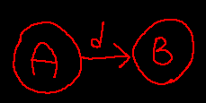
Maybe configuration A is a configuration before a monster has been defeated and configuration B is a configuration after it has been defeated. The action “d” the is the action of defeated that monster.
Observe this diagram:
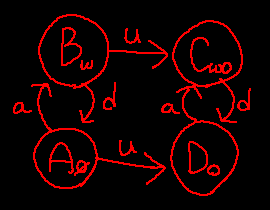
First note that there are four states: A_∅, Bw, Cwo, and Do. Second note that there are three actions: a, d, and u. Also note that in association with the four states there are two variables: w and o.
We can imagine this might be a scenario where there is a possibly locked door and a water wheel. The water wheel can be either activated or deactivated, and the door, independantly, can be either locked or unlocked. We can associate the variable o with the door such that the door is unlocked if and only if the value of o is true. And we can associate the variable w with the water wheel such that the water wheel is activated if and only if the value of w is true.
With this established, we can see that configurations A and D are configurations such that the water wheel is deactivated, and we can see that configurations B ad C are configurations such that the water wheel is activated. And we can see that configurations A and B are configurations such that the door is locked, and we can see that configurations C and D are configurations such that the door is unlocked.
Then we can say that the action a is the action of activating the water wheel, since all arrows labeled “a” are from a configuration such that the water wheel is deactivated and to a configuration such that the water wheel is activated. Similarly, we can say that the action d is the action of deactivating the water wheel, since all arrows labeled “d” are from a configurations such that the water wheel is activated and to a configuration such that the water wheel is deactivated. And finally, we can say that the action u is the action of unlocking the door, since all arrows labeled “u” are from a configuration such that the door is locked and to a configuration such that the door is unlocked.
- Action alphabet
The action alphabet for a dungeon is the set of all letters denoting all possible actions that exist in the dungeon.
In the above example, there are a total of three actions depicted in the diagram, with the names “a”, “d”, and “u”. So in that example, the action alphabet is “adu”.
The action alphabet gives us at a glance an idea of all the actions that exist in the dungeon.
TODO Action sequences
An action sequence is a sequence of actions the player can take that leads them from aa starting state to any valid dungeon configuration. We can denote an action sequence as a string of letters denoting actions.
For example, if “b” denotes the action of using a bomb, and “s” denotes the action of playing a song, then the action sequence “sbs” denotes the sequence of actions such that the player first plays a song, then uses a bomb, and then plays a song again.
The simplest possible action sequence is the empty sequence. This is the action sequence consisting of exactly no actions at all, and it looks like this: “”.
Possible action sequences are completely determined by the possible chains of actions from one configuration to another. If in configuration A the action “a” takes the player to configuration B wherein the action “b” takes the player to configuration C, then, supposing the player is initially in configuration A, a possible action sequence is “ab”.
Let’s look at the above example again:
Suppose the player is initially in configuration A. What possible action sequences exist for the player?
The first sequence that we know exists is the empty sequence. That is to say, the player can simply do nothing at all. This is the only action sequence that we know is always valid under all circumstances.
What possible single action sequences exist from A? A single action sequence is an action sequence that consists of a single action. We know that there is exactly one single action sequence from some configuration for each action available from that configuration. The actions available from A, as can be seen by the arrows that start from A, are “a” and “u”. Therefore the possible single action sequences are also “a” and “u”. That is to say, if the player were in configuration A and they were given the choice to make a single action, they could either activate the water wheel or unlock the door. And note that, in this case, there are two possible single action sequences.
What possible two action sequences exist from A? A two action sequence is an action sequence that consists of exactly two actions. To find such an action sequence, we can first ask, what first action can the player take from A? This we already determined in the above paragraph. Then we can ask, from the configuration lead to by that action, what second action can the player take? These possible second actions of course can be found by the arrows from the configuration lead to by the first action.
If we attempt to manually determine all possible two action sequences from A, we find:
- “ad”
- The player can activate the water wheel (leading to configuration B) and then deactivate the water wheel (leading back to configuration A).
- “au”
- The player can activate the water wheel (leading to configuration B) and then unlock the door (leading to configuration C).
- “ua”
- The player can unlock the door (leading to configuration D) and then activate the water wheel (leading to configuration C).
Notice that in this particular case, there are three possible two action sequences. Why? Let’s see: we have two possible first actions, “a” and “u”. Action “a” brings us to configuration B where we have two possible second actions: “d” and “u”. Thus, following the first action, we have two actions. Action “u” brings us to configuration D, where we only have one possible second action: “a”. Thus, following the second action, we have one action. The two actions following the first possible first action plus the one action following the second possible first action equals a total of three possible two action sequences.
Note that all possible two action sequences necessarily have a prefix that exists in the set of all possible single action sequences. In plain English, this means that every pair of subsequent actions from A must begin with an action from A. More generally, when N > 0, all possible N action sequences (action sequences consisting of N number of actions) necessarily have a prefix that exists in the set of all possible N-1 action sequences (action sequences consisting of N-1 number of actions). In other words, all N action sequences can be formed by adding one more action to the end of an N-1 action sequence.
This is true of our discovery of two action sequences above: all two action sequences begin with one of the single action sequences that we determined previously, namely either “a” or “u”.
- How many possible action sequences are there from some configuration?
Sometimes there are a finite number of possible action sequences, and sometimes there are an infinite number of possible action sequences from some configuration. (From most configurations in most dungeons there will be an infinite number of possible action sequences.)
First some examples!
Here is an example of finite possible action sequences from any configuration:
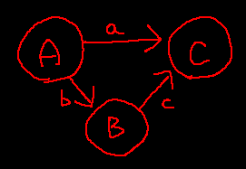
From A, all possible action sequences (of which there are a finite many) are the following:
- “”
- The player can do nothing so they remain in A.
- “a”
- The player can take action “a” leading them to C.
- “b”
- The player can take action “b” leading them to B.
- “bc”
- The player can take action “b” followed by action “c” leading them to C.
From B, all possible action sequences (of which there are a finite many) are the following:
- “”
- The player can do nothig so they remain in B.
- “c”
- The player can take action “c” leading them to C.
From C, all possible action sequences (of which there are a finite many, in fact there is only one!) are the following:
- “”
- The player can do nothing so they remain in C. This is the only possible action sequence in C because there are no arrows from C.
Here is an example of infinite possible action sequences from any configuration:
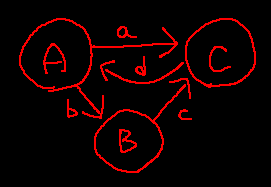
Notice that this is the same example as before, except now a new arrow has been added: “d” from C to A.
What this means is that all possible action sequences from any configuration in this example consists of all possible action sequences from any configuration in the previous example with the addition that new action sequences can be formed by appending “d” to the end of any action sequence that ends in “a” or “c”. This is because actions “a” or “c” lead to configuration C, from which there is now the possible action “d”. But because “d” leads to A, and because from A there are possible actions “a” and “b”, any of the newly formed action sequences ending in “d” can also be appended with “a” or “b” to form yet more new possible action sequences.
In this example, this process can be repeated forever. Most important to note, is that the reason this process can be repeated forever is because of the presence of an action in the action sequence that returns the player to a previously visited configuration once visited over the course of the action sequence. In other words, there are loops. Where there are loops there are endless possibilities! Intuitively, the player can run around in circles endlessly. Concretely, the player can, for example, move from A via “a” to C, and then via “d” back to A, from which this action subsequence of “ad” can be repeated endlessly.
- What da heckie is a loop?
First, an action subsequence is a part of an action sequence. For example, in the above example, consider the action sequence from A: “adbcdad”. In this action sequence, “adb”, “bcd”, “b”, “dbcdad”, and even “” are all action subsequences, because they can be found inside of “adbcdad”. However, “cdb”, is not an action subsequence because it cannot be found inside “adbcdad”.
A repeatable action subsequence is any action subsequence that can be replaced by any number of itself. For example, in the same action sequence as above “adbcdad”, “dbc” is a repeatable action subsequence because it can be replaced with, “dbcdbc”, “dbcdbcdbc”, “dbcdbcdbcdbc”, or even “” and we still end up with a valid action sequence. This corresponds to a loop in the diagram.
What is a loop then? A first attempt at a definition says that a loop is any sequence of configurations such that from each configuration in the sequence, the following configuration can be gotten to by an action, and from the last configuration in the sequence, the first configuration can be gotten to by an action.
We’ll call a sequence of configurations a configuration sequence to distinguish it from an action sequence.
For example, the loop corresponding to the repeatable action subsequence “dbc” is A->B->C. Another loop in the above diagram is A->C, because C can be gotten to directly from A, and A can be gotten to directly by B.
Another definition of a loop might be this: a loop is any configuration sequence such that each subsequent configuration corresponds to the target of each subsequent action in some repeatable action subsequence. The target of an action is the configuration that it leads to.
For example, consider the repeatable action subsequence “dbc”. We know that this corresponds to loop A->B->C. According to our second definition, this is because the target of “d” is A, the target of “b” is B, and the target of “c” is C.
At first thought, every configuration sequence consisting of a single configuration is a necessarily a loop, because from any configuration, the empty sequence will always return the player to that same configuration. However, this defies both of our definitions.
Our first definition requires that all configurations in the loop can be gotten to by an action. However this isn’t the necessarily the case. While it is true that from all configurations there exists an action subsequence that leads back to that same configuration (namely, the empty sequence), it is not necessarily true that there is an action that leads back to the same configuration. Consider this diagram:
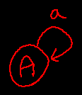
There are two possible action sequences from A that lead to A:
- “”
- The player can do nothing in A, leaving them in A.
- “a”
- The player can perform action “a” in A, leading them back to A.
In the first case, the means by which the player returns to A is not an action. More specifically it is the lack of action that leaves the player in A.
In the second case, the means by which the player returns to A is an action, namely “a”.
The difference here illustrates that the existence of the empty sequence is not sufficient to consider all configuration sequences containing a single configuration a loop.
With our second definition it’s more straightforward. The definition says that every configuration in a loop must correspond to the target of an action in a repeatable action subsequence. And while the empty sequence is a repeatable action subsequence, it contains no actions, and thus there are no targets for any configuration to correspond to.
- TODO talk about composition of action subsequences and cases of commutativity and non commutativity
- TODO Non-sequences
Not all possible strings of letters denote valid action sequences. A non-sequence is any sequence of actions that can never occur starting from a starting state.
Returing once again to the above example:
An example of a non-sequence from A would be the sequence “aua”. The reason that it’s a non sequence can be found out by following each action in the sequence on the diagram. From A, we take the “a” arrow to B, from which we take the “u” arrow to C, from which we can’t take any such “a” arrow because there aren’t any “a” arrows from C! Therefore “aua” is a non-sequence from A.
Notice that a string that denotes a non-sequence from one configuration may denote a sequence from another configuration. For example, the string “uad” from A denotes a sequence, because there is a chain of arrows “u” to D, “a” to C, and then “d” to D that can be followed from A. But the same string denotes a non-sequence from, for example, B, because attempting to follow the same chain fails: we can follow the initial action “u” from B to C, but we can’t follow the second action “a” from C, because there is no action “a” from C.
Notice that because the empty sequence is always a valid action sequence, that, correspondingly, the empty sequence is never a valid non-sequence. In other words, it is always possible to do nothing.
What da heckie are configuration classes?
Sometimes it’s not a singular particular dungeon configuration you are interested in getting to, but a class of dungeon configurations, i.e., a configuration class. For example, suppose you want to unlock the big scary door. Suppose also that there is a switch that controls whether the water wheel is on or off. But the key to the big scary door is accessible regardless of the state of the water wheel. In other words, it doesn’t matter to you whether the water wheel is activated or not, you only care about whether the big scary door is unlocked. Thus what you care about is not a singular particular dungeon configuration, but rather the class of all dungeon configurations such that the big scary door is unlocked, which consists of at least two different dungeon configurations: one where the water wheel is activated, and one where the water wheel in not activated.

In this diagram, there are four configurations:
L- water wheel is inactive and big scary door is locked!
U- water wheel is inactive and big scary door is unlocked!
WL- water wheel is active and big scary door is locked!
WU- water wheel is active and big scary door is unlocked!
Since you only care about the configurations where the big scary door is unlocked, you care about the class of configurations consisting of WU and U! As you can see, among this class of configurations is the possibility of the water wheel being active and the possibility of it not being active. And that’s okay, because you don’t care about whether the water wheel is active!
Also notice the arrows. We are assuming that the switch that toggles the activation of the water wheel can be toggled to the player’s heart’s content, but that the big scary door, once unlocked, can never be locked back up. This is why you see mutual arrows going both forwards and bacwards between L and WL and between U and WU, but you only see rightwards arrows from L to U and from WL to WU.
Notice also that there’s no single action the player can take to simultaneously activate the water wheel and unlock the door. The diagram shows that the only two ways to get from L to WU is either first to activate the water wheel and then to unlock the door, or first to unlock the door and then to activate the water wheel.
Dungeon topology
A dungeon is similar to a maze in that from any point A to any point B there may be any number (possibly 0) of possible paths you can take. Unlike a maze though, which has fixed topology, a dungeon often has dynamic topology. In particular, this dynamism is due to the fact that the topology of the dungeon is a function of the dungeon’s state. In other words, the collection of sets for each location in the dungeon of all possible paths you can take from that location varies depending on the values of dungeon’s state variables.
For example, suppose you can only get from across a moat if the draw bridge is lowered. When the draw bridge is raised, there is no direct path from either side to the other. When the draw bridge is lowered, there is a path from either side to the other. That is to show that the topology is different depending on the status of the draw bridge.
The dungeon map
Consider the dungeon map. This shows the general physical layout of the dungeon, ignoring the specifics that vary.
Here’s an example of a dungeon map:
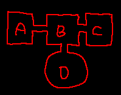
Here we have a map of a dungeon which can be seen as having four rooms: A, B, C, and D. Three squarish shaped rooms A, B, and C at the top and a round room D at the bottom. Room B is conjoined with all three other rooms via small passageways.
Suppose we want to represent this map using a diagram similar to state space diagrams. It might be tempting to create a diagram like this one:
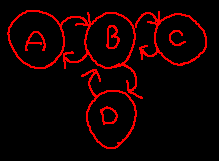
The intuition here is that each room corresponds to a circle in the diagram, and each arrow corresponds to a way from one room to another room. Each arrow here is accompanied with a corresponding arrow in the reverse direction, because each passageway can be walked through in both directions.
However, this diagram is equivalent in an important sense to this one:
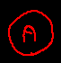
In other words, the more complex diagram above expclitly depicting rooms A, B, C, and D can be simplified into a single circle. This is because in the diagram above, all possible circles can be gotten to from any other circle at any time. If the player is in room C, for example, it’s no different than if they were in room B, or A, or D, because from any of those other rooms, C can be gotten to, and from C, any of the other rooms can be gotten to.
Contrast with this dungeon map:
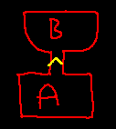
Here are two rooms A and B conjoined by a ledge denoted by the yellow arrow pointing from A to B. The ledge is too high up to climb up, but it can be jumped off of from A into B.
The equivalent diagram for this dungeon would be this:
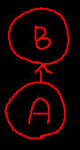
This time the diagram is already completely simplified. The reason this diagram can’t be simplified to a single circle is that A and B are different in what can be gotten to from them. From A, B can be gotten to, but from B, A cannot be gotten to. This is the critical difference between this dungeon map and the previous one: not all parts of the dungeon can be accessed from all other parts of the dungeon.
A first attempt at a rule can be formed for simplifying any such diagram: All pairs of circles with a symetric pair of arrows between them can be reduced to a single node.
Take this diagram for example:
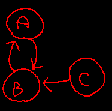
A and B have a symetric pair of arrows between them. That is, corresponding to the arrow from A to B is an arrow from B to A, and, equivalently, corresponding to the arrow from B to A, there is an arrow from A to B.
So the first step in simplifying this diagram is to merge A and B:
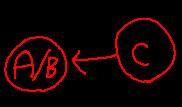
Here we have replaced A and B with a single circle labeled “A/B” to represent both A and B simultaneously.
When we look for further opportunities for simplification, we find none, because there are no more symetric pairs of arrows between any two circles.
Our rule turns out to be insufficient for capturing all opportunities for simplification. Consider this diagram:
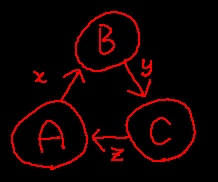
In this diagram it is clear that all circles can be gotten to from any other circles. A, for example, can be gotten to directly from C, and indirectly from B; B can be gotten to directly from A, and indirectly from C; and C can be gotten to directly from B, and indirectly from A.
However, there are no symetric pairs of arrows. But we can see that there is a loop. So we need a more general rule: all circles participating in the same loop can be replaced with a single circle corresponding with that loop.
Recall that a loop is a configuration sequence such that each subsequent configuration corresponds to the target of each subsequent action in some repeatable action subsequence.
The first step simplifying a loop is to identify the loop. Suppose we identify the loop A->B->C. We know its a loop because its a sequence of configurations that corresponds to the repeatable action subsequence “zxy”. The second step is to replace all configurations participating in this loop; namely, A, B, and C; with a single circle, and we get this:
(We could have named it “A/B/C” to denote that it is equivalent to A, B, and C combined.)
Our new rule for simplification should be sufficient for all cases. Let’s consider this slightly more complex example:
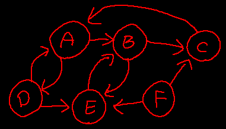
Our first rule is still useful as aa rule of thumb, because symetric pairs are quick to spot. We can start to simplify this diagram by first combining A and D as well as B and E, because it is clear that they have symetric pairs of arrows between them:
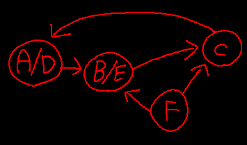
We replaced A and D with “A/D” and we replaced B and E with “B/E”. Notice what remained the same and what changed about the arrows. We removed the arrows between A and D and beween B and E, because we merged those into one. The arrow from C to A is now the arrow from C to “A/D”, because the original target A became “A/D”. Likewise, the arrow from F to E is now the arrow from F to “B/E”, because the original target E became “B/E”. The arrow from B to C became the arrow from “B/E” to C, because the original source B became “B/E”. And lastly, notice that the arrows from A to B and from D to E were replaced with a single arrow from “A/D” to “B/E”. Strictly speaking, we skipped a step. Logically, there should now be two arrows from “A/D” to “B/E”. But more on this later!
The next step in simplification is to notice the loop containing “A/D”, “B/E” and C. We can simplify this loop as follows:
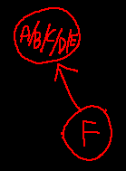
We replaced “A/D”, “B/E”, and C with “A/B/C/D/E”. The arrows from F to C ad from F to “B/E” were replaced with the arrow from A/B/C/D/E. No more simplification can be done!
TODO Considering distance
The above simplifications were made based on an idea of equivalence that only considers which locations can be accessed from which other locations. But this notion of equivalence does not consider the number of steps needed in order from get from one location to another.
TODO Conditional topology (updated: )
As mentioned earlier, the topology of a dungeon is usually dynamic in that the places you can get to from any given place might be different depending on state variables.
This flavor of dynamic topology has the property that the number of possible locations doesn’t change, only the paths between them does. It would be lovely if we could adapt our diagrams in order to show conditional arrows between the circles. This is where topological template diagrams come in!
TODO Topological templates
Suppose we want to depict the general physical layout of the dungeon, similar to a map, except we dont want to ignore the ways in which the topology varies depending on the state variables.
- TODO Template notation (updated: )
Here’s a way we can visually depict these conditional arrows!
This shows that you can get from location A to location B by taking action
a. This is an unconditional path from A to B:
Now we can consider the case where you can only get from A to B if some condition is true. We’ll denote the dependence on the condition using parantheses around the condition. This shows that you can get from location A to location B by taking action
abut only ifxis true!:
Now we can consider the case where the movement from A to B is necessarily conjoined by a side effect. Remember that a side effect of some action is when a state variable changes value when that action is taken. We’ll denote side effects conjoined with an action using square braces! So this here shows that you can get from location A to location B by taking action
aand that the side effect of this is that the value of state variablexbecomesy:
We can also combine conditionals and side effects! This shows that you can get from location A to location B by taking action
abut only ifxis true. It also says that in taking this path from A to B it has the side effect that state variableytakes on the value ofz:
We’ll also have a notion of conditional side effects (not to be confused with conditional actions with unconditional side effects). When we place the
(x)after the action, it means the action is conditionally dependant onx. But if we place the(x)after the side effect, it means instead that the side effect is conditionally dependant onx. Here shows an unconditional path with a conditional side effect. You can always get from location A to location B by taking actiona, and taking this path may or may not have the side effect that state variablextakes on valuey. The side effect only occurs ifzis true!:
And of course we can have both the action and the side effect be conditional! Here is a conditional path with a conditional side effect. This shows that you can get from location A to location B only if
xis true. And it says that in taking this path (assuming you can) that state variableywill take on valuezonly ifwis true!:
Dungeon space
Notice that its possible for any point in the dungeon topology to be paired with multiple possible dungeon configurations. And notice that its possible for any point in the dungeon state space (i.e., every dungeon configuration) to be paired with multiple points in the dungeon topology. In other words, for every location you could be in the dungeon, there are typically multiple configurations that the dungeon could have. And conversely, for every configuration the dungeon could have, you could typically be in several different locations in the dungeon.
There’s another way to think about the topology of the dungeon. If we consider all of the pairs of topologically distinct location on the dungeon map with every possible configuration that the dungeon can be in when the payer is at that location, and if we consider the paths between these pairs such that each path represents either a physical movement of the player or an action (which has a side effect on the dungeon configuration), (or possible both simultaneously), then we end up with an unconditional and wholistic topological view of the dungeon. We will call this dungeon space.
Dungeon space is useful because it allows us to represent wholistically how the player is able to progress through the dungeon both in terms of dungeon state and in terms of physical movement of the player.
TODO Conditional topology × state space (updated: )
There is a systematic way of deriving a dungeon space diagram from a topological template diagram and the state space diagram of the dungeon. Essentially you just have to pair every location in the topological template diagram with every state in the state space diagram that is possibly achievable in that location!
TODO Analysis: Temple of Time (Twilight Princess)
TODO Analysis of game mechanics
TODO Dungeon generation (updated: )
I want to come up with a sort of formula for constructing dungeons by sort of throwing the “dice of logic” and seeing what comes up!!
If you can randomly generate a graph of whatever size and complexity you choose, it’d be really cool then to use that to represent a dungeon space. From there you could “factor out” the dungeon topological template/map + the dungeon state space. And from there you can draw up a real dungeon following the map, and map your palette of dungeon mechanics onto the dungeon state space! There’s a lot of creative freedom here, but it would also give you a formal guide to randomly generate the logical structure of a dungeon within whatever parameters you want.
So the ultimate goal of this whole dungeon topology exploration is to be able to do this!